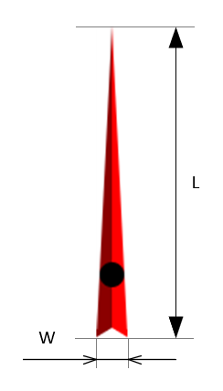

Fig. 1 - SegmentArrow
Home → Segment Arrow
Arrow is an auxiliary graphic object for the implementation of "Gauge" (Fig. 1).

Fig. 1 - SegmentArrow
C - the anchor point of the arrow - is the center of the circle of the arrow rotation.
R - circle radius.
α - arrow angle.
The arrow has length and width (Fig. 2).
L - length of arrow image.
W - width of arrow image.

Fig. 2 - Arrow Geometry
The following scripts should be included in the <head> section:
To create an object, the main parameters are passed to the constructor function:
id - arrow identificator as a text string.
context - CanvasRenderingContext2D for drawing the arrow.
cx - X coordinate of the circle center.
cy - Y coordinate of the circle center.
width - arrow width.
length - arrow length.
angle - the angle of deviation of the arrow from the horizontal axis in degrees.
Examples of using various properties and methods of the object.
img - the image that represents the arrow.
img_src - path to the arrow image.
img_angle - angle of deviation of the image from the horizontal axis in degrees. For example, if the arrow in the image is directed vertically upwards, then the img_angle should be set to -90°.
img_offset_x - offset of the image along the X axis to bring the anchor point of the arrow to the center of the circle.
img_offset_y - offset of the image along the Y axis to bring the anchor point of the arrow to the center of the circle.
visible - flag ensures the visibility of the object if set in true.
in_progress - flag takes the value true during the animation.
calc() - performs basic calculations of the shape and style of a segment when it is created, changed and during animation.
This method should be called after changing the properties of the object so that they take effect.setImgSrc(path) - sets the path to the arrow image and binds the calc() method to the image load event.
draw() - draws an object.
instanceCopy() - creates an independent copy of the object.
Home → Segment Arrow